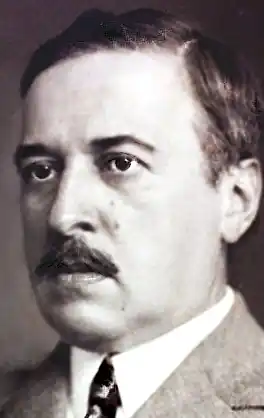
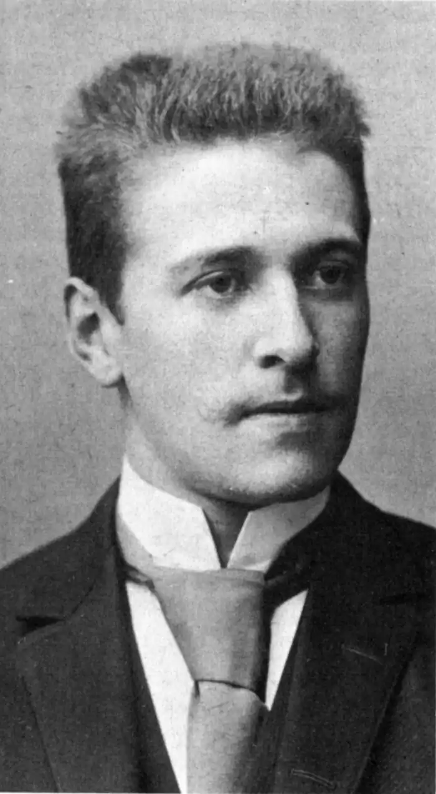

ГОФМАНСТАЛЬ, Гуго фон (Hofmannsthal, Hugo fon — 01.02.1874, Відень — 15.07. 1929, Родаун, побл. Відня) — австрійський поет і драматург.Гофмансталь (повне ім'я — Гуґо Лоренц Август Гофман Едлер фон Гофмансталь) був единою дитиною Анни і доктора юриспруденції Гуґо фон Гофмансталя, директора банку. Його освітою спочатку займалися приватні вчителі, а в 1884 р. Гофмансталь вступив у Віденську академічну гімназію, де зарекомендував себе надзвичайно здібним юнаком. Уже на час навчання припадають його перші поетичні спроби. Щоправда, щоби не дратувати дирекцію гімназії, він змушений був підписувати свої публікації псевдонімами. Таким чином побачили світ вірші "Що є світ" ("Was ist die Welt"), "Буремна ніч" ("Sturmnacht"), "Для мене" ("Fur mich"), "Ґюльнара" ("GvAnaxs"), усі датовані 1890 роком і підписані псевдонімом "Лоріс Меліков". Уже перші твори 16-літнього поета були позначені зрілістю стилю, що значною мірою пояснює його стрімке входження у літературний світ Австрії. Упродовж короткого часу Гофмансталь познайомився і заприятелював із такими відомими літераторами, як Г. Бар, котрий назвав юного Гофмансталь класиком, А. Шніцлером, С. Георге, Г. Гауптманом, М. Метерлінком та ін. Приятелем, наставником і опікуном поета-початківця став С. Георге. Вони зустрілися у 1891 р. і їхня дружба тривала понад 15 років.
Після закінчення гімназії Гофмансталь, за наполяганням батька, вступив на юридичний факультет Віденського університету, але провчившись два роки, пішов на військову службу у драгунський полк. У 1895 р. він повторно вступив в університет, щоб студіювати філологію, і в 1898 р. захистив дисертацію "Про слововживання у поетів "Плеяди". Темою його докторської дисертації, написаної під науковим керівництвом Г. Гауптмана, стало дослідження поетичного становлення В. Гюґо. Її він захистив у 1901 р. У цьому ж році Гофмансталь одружився з Гертрудою Шлезінгер, молодшою він нього на сім років, з якою вони наживуть трьох дітей — двох синів Франца та Раймунда і дочку Кристину.
Після одруження Гофмансталь майже безвиїзно мешкав у Родауні, що поблизу Відня, ведучи життя вільного літератора. Цей розмірений життєвий плин був перерваний лише у роки Першої світової війни. Як офіцер запасу, Гофмансталь був призваний в армію у липні 1914 р. Він служив в армійському прес-центрі та дипломатичній місії у країнах Скандинавії та Швейцарії. Крах Габсбурзької монархії сприйняв як особисту трагедію, як втрату важливої частини свого життя. Наприкінці життя Гофмансталь багато мандрував: Італія, Франція, Англія, Сицилія, Марокко і Північна Африка. 15 липня 1929 р. — через два дні після самогубства найстаршого сина Франца — Гуґо фон Гофмансталь помер від крововиливу в мозок у власному будинку поблизу Відня. Творчість Гофмансталя досить різнопланова у жанровому відношенні. Він є автором ліричних віршів і драм, новел і оперних лібрето, теоретичних статей і критичних етюдів. У першу чергу, він, звичайно, — поет. Лірика Гофмансталя вибудована на органічному сплаві імпресіонізму та символізму, вона герметична і цілісна. Прикметний у цьому плані один із ранніх віршів Гофмансталя "Балада зовнішнього життя" ("Ballade des auBeren Lebens", 1895), де символічність і особлива сугестивна тональність поєднуються з осягненням найтонших душевних порухів, неусвідомлених поривань і бажань: І дітлашня з глибокими очимаРосте собі, не розгадавши Мислі,І мре, і кожному — все та ж дорога...І вітер знову дме, й до всього в світіЗнов прислухаємось, і все щось кажем,Жадання носимо й тіла зужиті. За влучним зауваженням Д. Наливайка, поезії Гофмансталя "притаманний подив перед життям як незбагненною цінністю, перед людиною та розмаїттям її життєвиявів, подив, у якому мудрість поєднується зі своєрідною наївністю, можливо, тонко розігруваною". Міркування про "зовнішнє життя", за яким, звичайно, приховувалося напружене внутрішнє життя, характерне для всієї поетичної творчості Гофмансталя. І хоча вона займає порівняно невелике місце у творчості письменника, все ж її високий гуманізм і камерність, ідейно-змістова вишуканість і витонченість зробили Гофмансталя не тільки найзначнішим поетом модерністичного літературного угруповання "Молодий Відень", а й митцем загальноєвропейського масштабу. Значне місце у літературній спадщині Гофмансталя належить драмі, яка за своїм змістом і формою близька до театру М. Метерлінка. Його перші драматичні твори, написані не без впливу символізму, різко відрізнялися від домінуючого в цей час натуралістичного театру своєю універсальністю, глибиною та пластичністю вираження. У першу чергу це стосується найзначніших його творів — статичної драми "Смерть Тіціана" ("Der Tod des Tizian", 1892) — про всеперемагаючу силу мистецтва та вічної краси, та ліричної драми "Блазень і смерть" ("Der Tor und der Tod", 1893), у якій йдеться про трагічність беззмістовного існування у світі мрій. Новим періодом у драматичній творчості Гофмансталя стала його співпраця із композитором Р. Штраусом, для якого він написав 13 лібрето до опер, зокрема "Аріадну на Наксосі" ("Ariadne auf Naxos", 1912) та "Арабелла" ("Arabella", 1927— 1929). Вершиною цієї співпраці стало лібрето до "Кавалера троянд" ("Rosenkavalier", 1910). В останні роки життя Гофмансталя зажили популярності його прозові твори, поміж яких шість новел ( "Казка 672-ої ночі", "Історія з вершником " та ін.), незавершений роман з епохи рококо "Андреас, або Поєднані". Важливе місце у творчому спадку австрійського письменника займають есе: "Лист лорда Вендоса Френсіса Бекона" ("Ein Brief...", 1902), "Цінність і честь німецької мови" (1925) та ін., у яких він сформулював проблематику своєї творчості, як і творчості близьких йому за духом літераторів. Із Гофмансталем був знайомий І. Крушельницький, котрий з дозволу автора переклав і уклав збірку його творів "Лірика". Окремі сонети Гофмансталя переклав Д. Павличко. Б. Щавурський